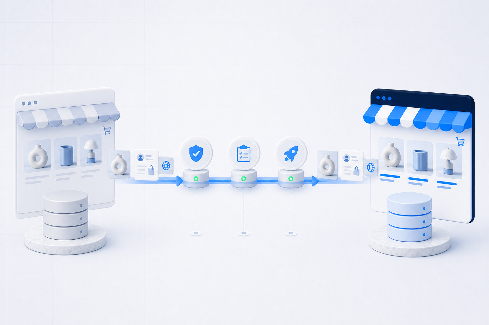

Perkeliami tik reikalingi duomenys
Į Shopify perkeliami reikalingi produktai, klientai, istorija ir turinys, o ne visi senos sistemos dublikatai.
Sudarome perkeliamų produktų, klientų, užsakymų, URL, funkcijų ir integracijų sąrašą. Galutinį perjungimą planuojame tik po bandomo importo ir patikros.

Į Shopify perkeliami reikalingi produktai, klientai, istorija ir turinys, o ne visi senos sistemos dublikatai.
Seni ir nauji URL susiejami, paruošiami 301 nukreipimai, o po paleidimo tikrinama, ar paieškos sistemos juos atpažįsta.
Verslas žino, kada stabdomi pakeitimai, kas tikrina rezultatą ir kokia yra galutinio perjungimo seka.
Vien noro pakeisti dizainą neužtenka. Reikia aiškiai žinoti, kokius duomenis ir veikiančius procesus verslas turi išsaugoti.
Naujoms rinkoms, mokėjimams, pristatymo būdams ar kasdieniam valdymui reikia per daug individualaus darbo.
Atnaujinimai, programėlės ir ankstesni pakeitimai konfliktuoja arba kelia saugumo bei stabilumo riziką.
Produktų atributai, klientai ir užsakymai saugomi nevienodai arba turi daug dublikatų.
Planuojama nauja rinka, sandėlio sistema, prekės ženklo atnaujinimas ar procesų pertvarka.
Duomenų importas yra tik viena dalis. Taip pat reikia susieti laukus, patikrinti rezultatą ir aiškiai suplanuoti paleidimą.
Platforma, katalogo dydis, programėlės, integracijos, URL, rinkos, apskaita ir žinomos problemos.
Produktai, variantai, kolekcijos, klientai, užsakymai, puslapiai, failai, papildomi laukai („metafields“) ir reikalingi pakeitimai.
Reikalinga pirkimo patirtis atkuriama Shopify temoje, o ne kopijuojamas kitos platformos kodas.
Tikrinami kiekiai, ryšiai, vaizdai, kainos, variantai, klientai ir sutarta užsakymų istorija.
Svarbių URL susiejimas, 301 nukreipimai, meta informacija, indeksavimo nustatymai ir DNS veiksmai.
Pakeitimų stabdymas, paskutinis importas, verslo patikra, domeno perjungimas ir stebėjimas po paleidimo.
Taip neatitikimus galime ištaisyti dar prieš perjungdami domeną.
Suskaičiuojame duomenis, funkcijas, integracijas, URL ir žinomas problemas.
Rezultatas: patvirtintas perkeliamų duomenų ir funkcijų sąrašasPerkeliame duomenų pavyzdį arba visą kopiją ir surašome, ką reikia pertvarkyti ar išvalyti.
Rezultatas: neatitikimų sąrašasVerslo atstovai sutikrina katalogą, užsakymus, mokėjimus ir svarbiausius procesus.
Rezultatas: verslo patvirtintas rezultatasAtliekame paskutinį duomenų atnaujinimą, perjungiame domeną ir stebime svarbiausius veikimo rodiklius.
Rezultatas: veikianti Shopify prekyba* Negalime garantuoti, kad SEO pozicijos nesikeis ar kad perjungimas vyks visiškai be trikdžių. Riziką sumažiname turėdami prieigas, tvarkingus duomenis ir pakankamai laiko patikrai.
Dažniausiai perkeliami produktai, variantai, kolekcijos, klientai, sutarta užsakymų istorija, puslapiai, failai ir dalis papildomų laukų. Tikslus sąrašas priklauso nuo senos platformos ir duomenų kokybės.
Ne. Kitos platformos tema negali būti tiesiog perkelta į Shopify. Išsaugome prekės ženklo kryptį ir svarbias funkcijas, o parduotuvės vaizdą bei veikimą atkuriame Shopify sistemoje.
Susiejame svarbius senus ir naujus URL, paruošiame 301 nukreipimus, perkeliame meta informaciją ir po paleidimo tikriname, ar paieškos sistemos tinkamai atpažįsta puslapius. Paieškos pozicijų garantuoti negalima.
Didžioji dalis darbo atliekama atskiroje Shopify parduotuvėje. Galutiniam duomenų atnaujinimui ir domeno perjungimui gali reikėti trumpo, iš anksto suplanuoto prekybos stabdymo.
Vertiname, kokį verslo procesą jos atlieka. Tada parenkame Shopify programėlę, integraciją, individualų sprendimą arba atsisakome nebereikalingos funkcijos.
Pagal tai nustatysime, kokių prieigų ir pavyzdžių reikia pirminiam migracijos įvertinimui.